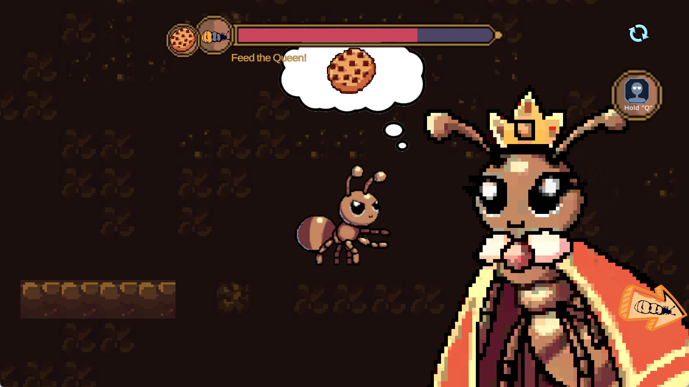
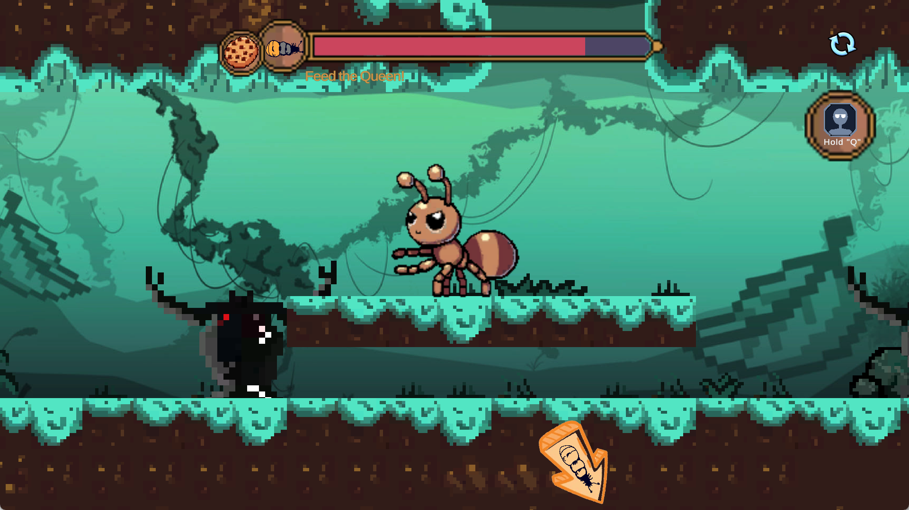
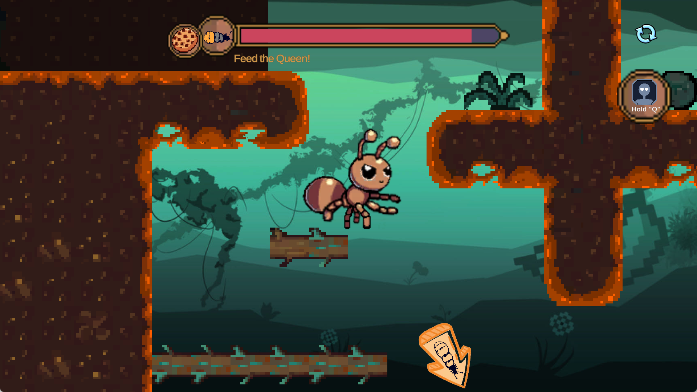

Terrarium
GMTK Game Jam 2024 · Built to Scale

时间2024.08
项目形式GMTK Game Jam 团队项目
我的职责Tilemap / 场景绘制 / 动画
开发工具Unity · 2D 平台跳跃
项目概述
Terrarium 是一款 2D 平台跳跃游戏。玩家扮演工蚁，在生态箱中寻找蚁后需要的食物，跨越障碍并把食物安全送回蚁后身边。关卡以平台移动、路线判断和环境障碍构成主要挑战。
我的工作
- 地图 Tilemap：负责地图 Tilemap 的绘制与关卡画面搭建。
- 近、中、远景：负责近景、中景和远景的绘制，建立关卡的空间层次。
- 动画制作：制作部分敌人动画与手部动画。
画面与关卡表达
Tilemap 与平台路线
Tilemap 同时承担平台碰撞与画面构成。平台边缘、落点和障碍轮廓需要清楚，使玩家在移动和跳跃中能够快速读取路线。
近中远景分层
近景、中景和远景共同建立生态箱的纵深，同时通过明度与细节差异避免背景干扰可操作平台和敌人的识别。
角色与敌人动画
敌人与手部动画用于强化动作反馈，让玩家更容易理解攻击、受击以及场景中的动态事件。
风格一致性
平台、背景层和动画需要共享统一的像素密度、轮廓语言与色彩关系，使不同成员制作的内容能够形成完整场景。
游戏画面




以上图片来自项目公开 itch.io 页面。